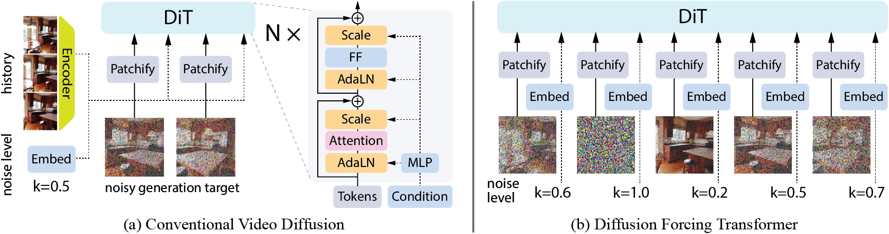
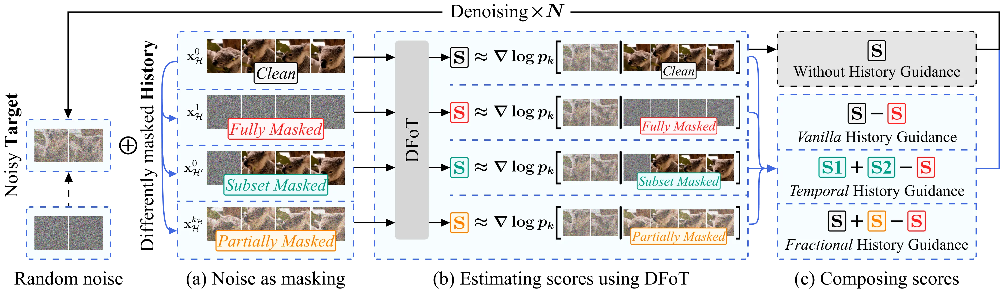

TL;DR: Diffuse long
videos by performing guidance over different histories, enabled
by Diffusion Forcing Transformer, a simple finetunable add-on to
any existing sequence diffusion models.
Abstract
Classifier-free guidance (CFG) is a key technique for improving
conditional generation in diffusion models, enabling more accurate
control while enhancing sample quality. It is natural to extend
this technique to video diffusion, which generates video
conditioned on a variable number of context frames, collectively
referred to as history. However, we find two key challenges to
guiding with variable-length history: architectures that only
support fixed-size conditioning, and the empirical observation
that CFG-style history dropout performs poorly. To address this,
we propose the Diffusion Forcing Transformer (DFoT), a video
diffusion architecture and theoretically grounded training
objective that jointly enable conditioning on a flexible number of
history frames. We then introduce History Guidance, a family of
guidance methods uniquely enabled by DFoT. We show that its
simplest form, vanilla history guidance, already significantly
improves video generation quality and temporal consistency. A more
advanced method, history guidance across time and frequency
further enhances motion dynamics, enables compositional
generalization to out-of-distribution history, and can stably roll
out extremely long videos.
Five samples generated by Diffusion Forcing Transformer from a
single image. The model is trained only on the RealEstate10K
dataset but can roll out much longer than prior state-of-the-art
methods
[1][2].
We highlight samples with challenging motions (e.g. zooming out,
large rotation).
Ultra Long Video Generation
Diffusion Forcing Transformer (DFoT) along with
History Guidance Across Time and Frequency can stably
rollout extremeley long videos, such as the following 862-frame
video from a single test image from the RealEstate10K dataset.
Compositionality and Flexibility
DFoT learns the distribution of all sub-sequences than just
the full sequence, allowing conditioning on any length
history. Temporal History Guidance composes long
horizon behavior and local reactive behavior for new
capabilities.
We can rollout so long that this generated video is still playing!
Diffusion Forcing Transformer
Can we train a single diffusion model that can perform
conditional diffusion with different portions of history -
variable lengths, subsets of frames, and even different
image-domain frequencies? Built on
prior works, Diffusion Forcing Transformer (DFoT) trains video diffusion
with different noise levels per frame, leveraging noise as
masking to model distributions at sub-sequence level. This
achieves flexible history conditioning without changes to
existing architectures. One can easily
finetune any existing video models into a Diffusion Forcing
Transformer
to leverage history guidance and significantly boost generation
quality!

History Guidance
History Guidance is a family of history-conditioned guidance
methods achieved by composing various history-conditioned
scores. With the Diffusion Forcing Transformer, obtaining
different conditional scores is as simple as masking different
portions of the history with noise. We propose several schemes:
vanilla history guidance, which enhances consistency; temporal
history guidance, which improves compositionality; and frequency
guidance, which increases the degree of dynamism.

Qualitative Comparisons
On standard benchmarks, the
Diffusion Forcing Transformer (DFoT) not only
matches or surpasses industry closed-source models trained with
large-scale compute but also enables long rollouts far beyond
the test lengths of these datasets. We can perform rollouts of
60 frames on the Kinetics-600 dataset, compared to the previous
benchmark of 11 frames, and at least 276 frames on the
RealEstate10K dataset, significantly exceeding the previous
limit of around 16 frames.
The figures below present qualitative samples generated by
different diffusion methods using the same architecture.
Standard Diffusion refers to the conditional
diffusion baseline trained for a specific test history length
(in contrast to DFoT's support for any history length).
Binary Dropout is an ablative baseline that
drops out frames during training to allow for flexible history
conditioning. Full-sequence Diffusion is the
traditional video diffusion method from
Ho et al. 2022,
which uses reconstruction guidance to enable flexible
conditioning.
Samples on Kinetics-600 dataset with a challenging setting of
predicting next 60 frames given 5 initial frames.
More samples on Kinetics-600 dataset with a challenging setting
of predicting next 60 frames given 5 initial frames.
Samples on RealEstate10K dataset conditioned on the first frame
and a camera pose sequence. This task is usually considered much
harder than interpolating between two frames, the traditional
video generation task on this dataset. In addition, we
deliberately choose challenging motions such as big rotations or
zooming out, and a big length of 276 frames.
More samples on RealEstate10K dataset conditioned on the first
frame and a camera pose sequence. This task is usually
considered much harder than interpolating between two frames,
the traditional video generation task on this dataset. In
addition, we deliberately choose challenging motions such as big
rotations or zooming out, and a big length of 276 frames.
BibTeX
@misc{song2025historyguidedvideodiffusion,
title={History-Guided Video Diffusion},
author={Kiwhan Song and Boyuan Chen and Max Simchowitz and Yilun Du and Russ Tedrake and Vincent Sitzmann},
year={2025},
eprint={2502.06764},
archivePrefix={arXiv},
primaryClass={cs.LG},
url={https://arxiv.org/abs/2502.06764},
}